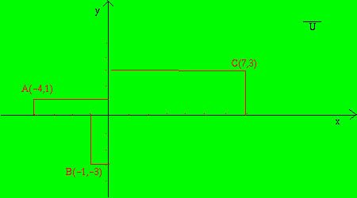
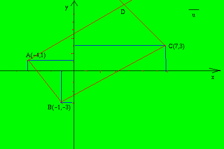

Esercizio per Liceo Psico-Pedagogico
esercizio:
I punti A=(-4,1), B=(-1,-3),C=(7,3) sono tre vertici consecutivi
di un parallelogramma. Trovare le coordinate del quarto vertice
Svolgimento
Prima di tutto il disegno con i dati noti

poi traccio il parallelogramma ricordando che per ogni linea che traccio sul disegno mi corrisponde un'operazione
algebrica:
1) traccio la retta per 2 punti AB
2) traccio la retta per 2 punti BC
3) avendo il parallelogramma i lati due a due paralleli traccio la parallela al lato AB passante per C
4) traccio la parallela al lato BC passante per A
5) dove le parallele si incrociano scrivo D

Quindi passo a trasformare le costruzioni geometriche in operazioni algebriche
1)trovo l'equazione della retta per due punti AB
2) trovo l'equazione della retta per due punti BC
3) trovo l'equazione della parallela alla retta AB passante per C
4) trovo l'equazione della parallela alla retta BC passante per A
5) risolvo il sistema fra le due parallele per trovare il punto D
Ora svolgo i vari punti
1)trovo l'equazione della retta per due punti A(-4,1) B(-1,-3)
formula:
(y-y1)/(y2-y1)=(x-x1)/(x2-x1)
con
x1=-1 x2=-4 y1=-3 y2=1
(y+3)/(1+3)=(x+1)/(-4+1)
(y+3)/4=(x+1)/(-3)
(-3y-9)/12=(4x+4)/12
-3y-9=4x+4
-3y-4x-9-4=0
4x+3y+13=0
y = -4/3 x - 13/3 (rettaAB)
2)Trovo l'equazione della retta per due punti B(-1,-3) C(7,3)
formula:
(y-y1)/(y2-y1)=(x-x1)/(x2-x1)
con
x1=-1 x2=7 y1=-3 y2=3
(y+3)/(3+3)=(x+1)/(7+1)
(y+3)/6=(x+1)/8
(4x+12)/24=(3x+3)/24
4y+12=3x+3
4y-3x+12-3=0
3x-4y-9=0
y=3/4 x - 9/4 (retta BC)
3)trovo l'equazione della retta parallela alla retta AB y = - 4/3 x - 13/3 passante per il punto C(7,3)
formula: y-y0=m(x-x0)
con x0 = 7 y0 = 3 ed m = - 4/3
(y-3)=-4/3(x-7)
(3y-9)/3=(-4x+28)/3
3y-9=-4x+28
3y+4x-9-28=0
4x+3y-37=0
y = -4/3 x + 37/3 retta CD
4) trovo l'equazione della retta parallela alla retta BC y = 3/4 x - 9/4 passante per il punto A(-4,1)
formula: y-y0=m(x-x0)
con x0 = -4 y0 = 1 ed m = 3/4
y-1=3/4(x+4)
(4y-4)/4=(3x+12)/4
4y-4=3x+12
4y-3x-4-12=0
3x-4y+16=0
y = 3/4 x + 4 (retta AD)
5) Poiche' il punto cercato e' all'incrocio delle rette CD ed AD faccio il sistema per trovare le coordinate del punto D
(purtroppo in HTML non ho il simbolo della parentesi graffa per indicare il sistema, quindi non posso usarlo pertanto
mi limito a raggruppare le equazioni)
y = -4/3 x +37/3
y = 3/4 x + 4
3/4 x + 4 = -4/3 x + 37/3
y = 3/4 x + 4
(9 x + 48)/12 = (-16 x + 148)/12
y = 3/4 x + 4
9 x + 48 = -16 x + 148
y = 3/4 x + 4
9 x + 16 x = - 48 + 148= 0
y = 3/4 x + 4
25 x = 100
y = 3/4 x + 4
x = 4
y = 3/4 · 4 + 4
x = 4
y = 7
D(4,7)
|